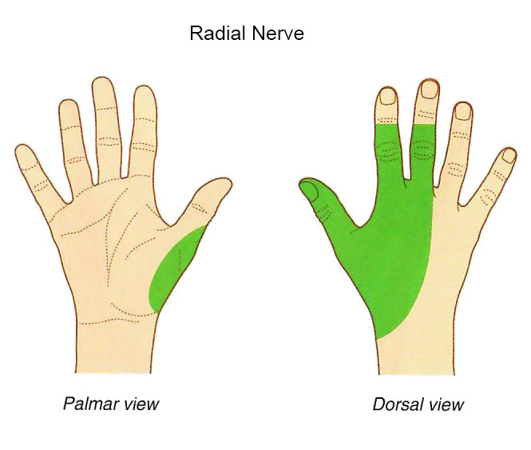

Lab 4 - Module 2 - The Hand: Page 6 of 12
Nerves of the Hand
×

Tap on image to enlarge
Step 22
Add the
radial nerve
which supplies no muscles of the hand. The superficial branch supplies skin and fascia over the lateral two-thirds of the dorsum of the hand, the dorsum of the thumb, and proximal parts of the lateral two and one-half fingers..
Back
Return to Lessons Index
Continue